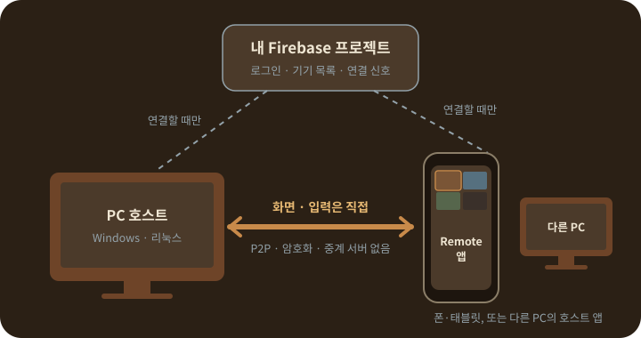

NEW
탭한 곳으로 커서
⚙ 메뉴의 🖐 터치 방식에서 고릅니다. 직접 터치는 탭한 자리로 커서가 가서 클릭하고, 누른 채 끌면 그 자리에서 끌어 옮깁니다. 터치패드는 지금처럼 화면을 끌어 커서를 움직입니다.
두 손가락 확대·이동은 두 방식 모두 앱 안에서만 동작합니다.
1.0.7 여러 PC를 한 화면에
PC에 호스트를, 안드로이드 폰·태블릿에 Remote 앱을 설치하면 같은 구글 계정의 PC가 목록에 뜹니다. 최대 9대를 골라 한 화면에 나눠 보고, 탭한 자리로 커서를 보내 바로 클릭합니다. PC에서 다른 PC를 볼 수도 있습니다.
지금 버전 1.0.7 · 무료 · 같은 내용의 실행형 설치 파일 .exe와 리눅스용 .deb(실험적, 설치 방법)도 있습니다.

011.0.7 새 기능
PC 고르기 창에서 볼 PC를 체크하고 [연결]을 누르면, 고른 수에 맞춰 화면이 저절로 나뉩니다. 한 대만 체크하면 지금처럼 한 대 보기입니다.

⚙ 메뉴의 🖐 터치 방식에서 고릅니다. 직접 터치는 탭한 자리로 커서가 가서 클릭하고, 누른 채 끌면 그 자리에서 끌어 옮깁니다. 터치패드는 지금처럼 화면을 끌어 커서를 움직입니다.
두 손가락 확대·이동은 두 방식 모두 앱 안에서만 동작합니다.
가상 키보드의 조합 버튼으로 자주 쓰는 조합을 한 번에 보냅니다.
기본·밝게·고대비·남색 네 가지가 들어 있습니다. 배경, 메뉴·카드, 버튼, 글자, 보조 글자, 강조, 키보드 키, 위험 — 8가지 색을 색상환이나 HEX 값으로 바꿔 내 테마를 여러 개 저장하고, 목록에서 누르면 바로 바뀝니다.
앱과 PC 호스트(설정 메뉴, 트레이 카드, 다른 PC 보기 창) 모두 되고, 기기마다 따로 저장합니다.
호스트 ⚙ 메뉴나 트레이 카드의 다른 PC 보기. 같은 계정의 다른 PC를 격자로 보고 조작합니다. 칸을 클릭해야 마우스가 켜지고, 툴바에 수정키 고정·조합 키·원격 명령·화질이 있습니다.
앱은 Wi-Fi(기본 높음)와 모바일 데이터(기본 보통) 기본값을 따로 두고, PC마다 따로 저장하거나 칸의 화질 버튼으로 이번 연결만 바꿉니다. PC 쪽에는 이 PC가 보낼 최대 화질이 있습니다.
모니터가 두 대 이상인 PC는 칸 이름 줄의 [🖥 1 ▾]를 눌러 모니터 1·2…를 골라 봅니다. PC마다 마지막 선택을 기억합니다.
메뉴의 🛑 PC 종료. 확인 창을 거쳐 Windows가 30초를 센 뒤 꺼지고, 그동안 취소할 수 있습니다. PC에서 폰·다른 PC에서 PC 재시작·종료 허용을 켠 경우에만 됩니다.
원격 PC가 잠기면 그 칸에 🔒이 뜨고 입력을 보내지 않습니다. 허용한 PC는 잠금 해제·PC 잠금으로 풀고 다시 잠급니다. 다른 기기가 같은 PC에 연결하면 원래 칸에 "다른 기기가 연결함"이 뜹니다.
02원래부터 되는 것
연결이 끊기면 다시 붙고, 폰에서 PC를 재시작하거나 업데이트할 수도 있습니다.

03연결 구조
04설치
처음 한 번만 하면 됩니다. 다음부터는 앱을 열고 PC를 고르기만 하면 됩니다.
구글 로그인과 Realtime Database를 켜고, 안드로이드 앱과 그 지문을 등록합니다. 처음 한 번 10~20분쯤 걸립니다.
코드 서명이 없어서 "Windows의 PC 보호" 창이 뜨면 추가 정보 → 실행을 누르세요. 시작 메뉴에서 Remote Host를 열어 설정값을 넣고 Google로 로그인합니다. 처음 실행하면 PC를 켤 때 자동으로 시작할지 묻습니다.
리눅스(우분투 24.04, 실험적): .deb — 로그인 세션을 Xorg로 바꿔야 합니다(Wayland는 연결마다 화면 공유 승인 창이 뜸). 리눅스 설치 방법
이미 설치된 호스트는 1.0.4부터 자동 업데이트로 올라갑니다. 직접 설치할 때는 트레이의 Remote Host 카드에서 호스트 종료를 먼저 누르세요.
.apk를 엽니다. 처음이면 "출처를 알 수 없는 앱 설치"를 허용합니다. 같은 프로젝트의 값을 넣고 PC와 같은 구글 계정으로 로그인합니다.
⚙ 메뉴 → 🔌 PC 선택에서 초록 점이 붙은 PC를 체크하고 [연결]을 누릅니다.
05처음 설정
Remote는 개발자의 서버나 Firebase를 쓰지 않고, 각자 자기 Firebase 프로젝트를 만들어 씁니다. 호스트와 앱에는 같은 프로젝트의 값을 넣어야 서로를 찾습니다. 화면 위치까지 담은 자세한 순서는 README의 처음 설정에 있습니다.
Firebase 콘솔에서 새 프로젝트를 만듭니다.
Authentication → 로그인 방법에서 Google을 사용 설정합니다.
Realtime Database를 만듭니다.빌드 → Realtime Database → 데이터베이스 만들기, 지역 선택, 잠금 모드로 시작. '데이터' 탭 맨 위의 주소(https://…firebaseio.com 또는 https://…firebasedatabase.app)를 복사해 둡니다.
규칙 탭에 아래 규칙을 붙여넣고 게시합니다.로그인한 사람이 자기 데이터만 읽고 쓰게 하는 규칙입니다.
{
"rules": {
"users": {
"$uid": {
".read": "auth != null && auth.uid === $uid",
".write": "auth != null && auth.uid === $uid"
}
}
}
}
프로젝트 설정 → 내 앱에서 Android 앱을 추가합니다.패키지 이름 black_buddle.remoteapp, 그리고 아래 SHA-1 인증서 지문을 등록합니다. 이 지문은 배포되는 APK에 고정된 공개 값이라 누가 설치하든 같습니다(비밀 값이 아닙니다).
SHA-1: 31:E6:CF:E9:D0:B6:59:C7:CE:A1:3D:E9:69:5E:D8:6C:ED:2E:B2:6E SHA-256: B3:E6:55:00:E8:2B:C5:1C:5E:B4:D5:34:AF:58:65:50:E6:D1:66:EE:5C:04:F7:69:D4:C5:61:09:5C:26:4E:FE
Google Cloud 콘솔(같은 프로젝트) → API 및 서비스 → OAuth 동의 화면을 설정합니다.앱 이름과 이메일만 넣으면 됩니다. 새 프로젝트는 "테스트" 상태로 시작하므로 대상 → 테스트 사용자에 로그인할 구글 계정을 추가하세요(또는 "프로덕션으로 게시" — 요청하는 권한이 이메일·프로필뿐이라 심사 없이 게시됩니다). 빠뜨리면 로그인할 때 "액세스 차단됨"이 뜹니다.
같은 곳의 사용자 인증 정보에서 OAuth 클라이언트 ID를 하나 더 만듭니다.유형은 데스크톱 앱이고, PC 호스트가 구글 로그인에 씁니다. 만들면 나오는 클라이언트 ID와 클라이언트 보안 비밀을 복사해 둡니다.
호스트와 앱을 처음 실행하면 설정 화면이 뜹니다. 오른쪽 값을 넣습니다.각 칸 아래에 "어디서 찾나요" 안내가 있습니다.
06쓰는 법
폰 앱은 오른쪽 위의 ⚙, PC 호스트는 창 오른쪽 위의 ⚙로 메뉴를 엽니다. 둘 다 네 묶음으로 정리되어 있습니다.
07안전
08알아 둘 점
09자주 묻는 질문
들지 않습니다. 개발자가 운영하는 서버가 없고, 각자 만든 Firebase 프로젝트의 무료 요금제로 충분합니다. 대기 중에는 하루 1~2MB 정도만 오가고, 화면 영상은 Firebase를 거치지 않습니다. 이번 달 사용량은 앱의 📊 사용량과 호스트의 사용량 확인에서 볼 수 있습니다.
화면과 입력은 기기끼리 암호화된 직접 연결(WebRTC)로만 오가고 저장되지 않습니다. 연결 신호와 기기 목록은 내 Firebase 프로젝트에만 있고, 규칙으로 내 계정만 읽고 쓸 수 있습니다. 비밀번호는 오가지 않고, 호스트는 관리자 권한 없이 동작하며, 연결되면 PC에 알림이 뜹니다. 재시작·종료·잠금 해제는 PC 앞에서 허용해 둔 경우에만 됩니다.
보낼 수 없습니다. Windows는 프로그램이 보낸 Ctrl+Alt+Del을 무시하고, 이를 우회하려면 관리자 권한 서비스가 필요합니다. 그러면 잠금 화면을 지키는 방어가 무너지기 때문에 일부러 넣지 않았습니다. 대신 조합 키의 Ctrl+Shift+Esc(작업 관리자), 🔒 PC 잠금, 🔄 재시작을 쓰세요.
일부 회사·학교·통신사 망은 기기끼리 직접 연결을 막습니다. Remote는 중계 서버를 쓰지 않으므로, 다른 망(예: 모바일 데이터)으로 시도해 보세요. 그 밖의 증상은 README의 문제 해결에 정리되어 있습니다.
나중에 연결한 쪽이 화면을 가져갑니다. 밀려난 칸에는 "다른 기기가 연결함"과 [다시 연결]이 뜨고, 저절로 다시 붙지 않습니다.
연결과 기본 조작은 됩니다. 다만 직접 터치, 화질 설정, 모니터 고르기 같은 새 기능은 그 PC의 호스트도 1.0.7이어야 합니다. 옛 호스트의 칸에는 "구버전"이 표시되고, 직접 터치를 쓰는 중이면 그 PC만 터치패드로 동작합니다. 1.0.4 이상이면 메뉴의 ⬆ 업데이트로 올릴 수 있습니다.
우분투 24.04의 Xorg 세션에서 확인했습니다(실험적). 기본 세션(Wayland)에서는 폰이 붙을 때마다 화면 공유 승인 창이 떠서 원격으로 쓸 수 없습니다. 자동 업데이트, WinLocker 잠금 해제·재잠금, 한/영 키는 Windows 전용입니다. 설치 방법은 README에 있습니다.
안드로이드 앱의 원격 화면 맨 위에 작은 배너 광고가 하나 있습니다. 원격 화면을 가리지 않습니다. 광고가 수집할 수 있는 정보는 개인정보처리방침에 적어 두었습니다.
소스 코드는 공개하지 않습니다. 이 저장소는 설치 파일 배포용이고, 릴리즈의 "Source code (zip/tar.gz)"는 GitHub가 모든 릴리즈에 자동으로 붙이는 것으로 README만 들어 있습니다.